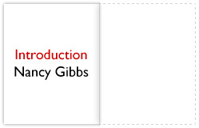
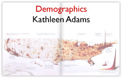
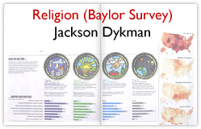
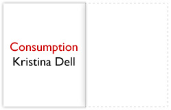

Assembling a Team
His initial inclination had been to do the project alone. But with the topics selected, Dykman realized that he would not have time to read, digest, and craft displays for all the data he wanted the project to include. Indeed, a cover-length graphics piece would be too much work even for Dykman and the two graphics reporters who worked primarily for him. If Nation Editor Beyer could spare them, he hoped at first to recruit three more reporters from her section. If he assigned one reporter to each spread, he could produce the five spreads he had in mind in the time he had. Over the weekend, however, Dykman realized he could do one of the spreads himself. So he needed four reporters to help him.
He would assign his two graphics reporters, Kathleen Adams and Kristina Dell, each a spread to research. He then asked Nation Editor Beyer if she could spare two of her own reporters. His first preference was to recruit colleagues with whose work he was familiar. He also wanted to ensure that, like his graphics reporters, the draftees were comfortable with statistics and what they meant.
He had two reporters in mind. Since Jeremy Caplan had earlier expressed interest in a graphic illustration of the nation’s income distribution, Dykman knew he would be eager to research the income spread. Coco Masters was another young reporter Dykman sought to involve. She was primarily a science and business reporter and, in Dykman’s view, she was careful and conscientious when she worked with data. Dykman also personally liked Caplan and Masters. Given the stress of producing such a large project in a short period of time, he wanted a team that could work amicably together. Beyer, who had suggested the project to Dykman the previous week, gave him the reporters he requested.
On Tuesday, October 10, Dykman met with his reporting team. Dell and Adams joined Caplan and Masters to discuss their assignments. Caplan would examine IRS data for the earnings spread. Masters would be responsible for the time use spread. Dykman was confident that Masters’ assignment would be straightforward, since he could point her to the Bureau of Labor Statistics’ Time Use Survey results. Meanwhile, Adams would take care of the demographics spread, and Dell would handle the consumption page. Dell would also assist Dykman in reporting the religion spread. He provided Dell with a list of questions to ask the authors of the Baylor religion study. He wanted to know what they felt were the most interesting or surprising results of their research. This would help him decide what to highlight.
By Thursday, October 12, Dykman had reported and laid out most of his religion spread with the help of Ed Gabel, one of Time’s graphic artists. The centerpiece was the four ways of viewing God described in the Baylor religion survey. He and Gabel illustrated each notion of God—as authoritarian, benevolent, critical or distant—and what percentage of people identified with each view. The spread showed how the type of God one believed in influenced other viewpoints, from the morality of abortion to the proper level of military spending.
But the other four spreads remained blank while the reporters tracked down information. Dykman had given them the rest of the week of October 10 to research their topics. He planned to spend the week of October 16 working with the reporters and other artists to assemble the reporters’ findings into an effective, readable package.
He already had a rough idea of how he would like to arrange the data. For the Time Use Survey, he envisioned a 24-hour clock sliced up into the average amount of time people spend performing certain activities. The income spread would use a pyramid to represent the number of people in various income brackets. And he already had a population density map for the demographics spread.
|  |  |
|  | |
|  |